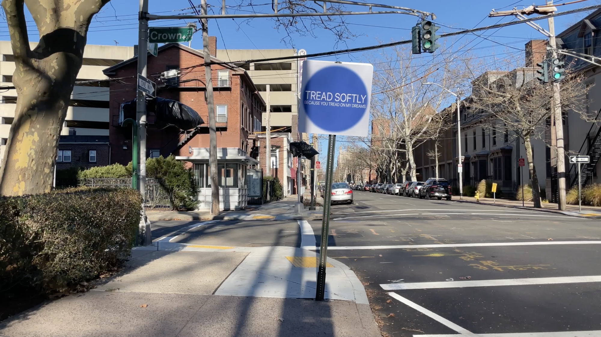
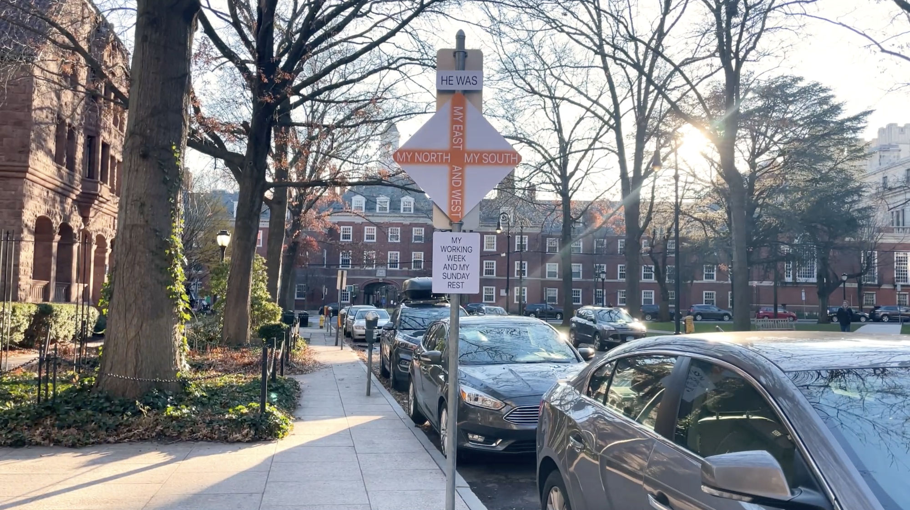
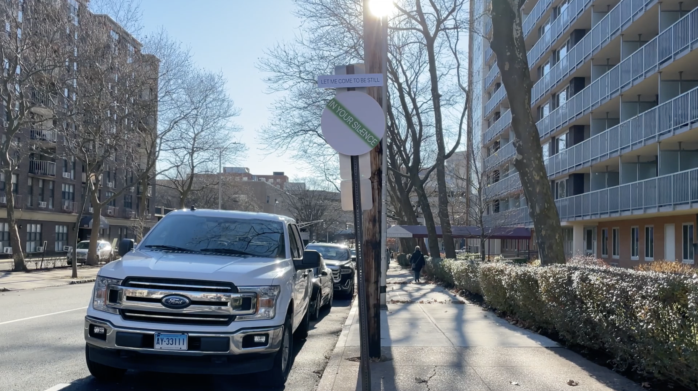
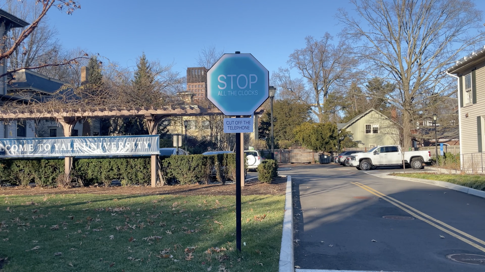
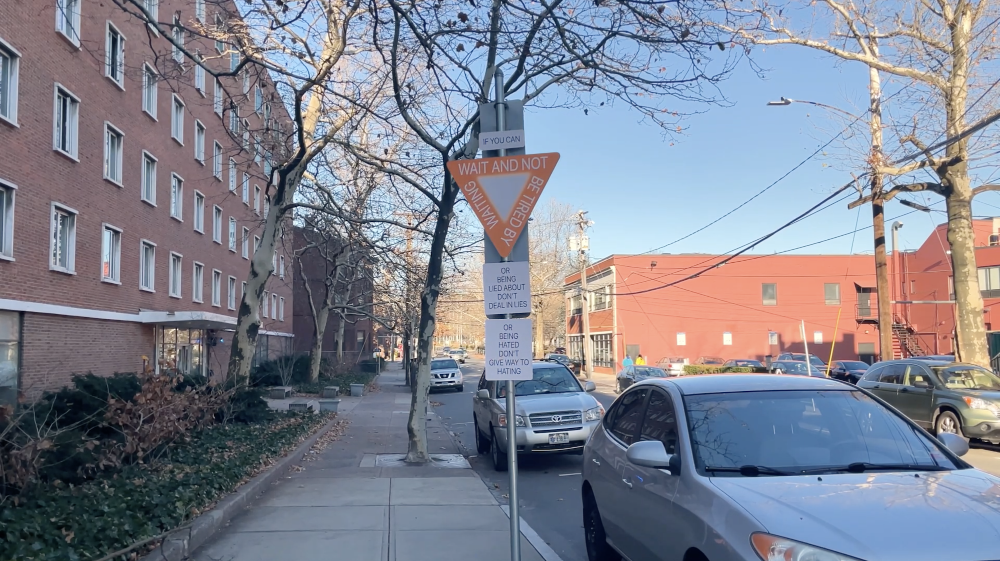
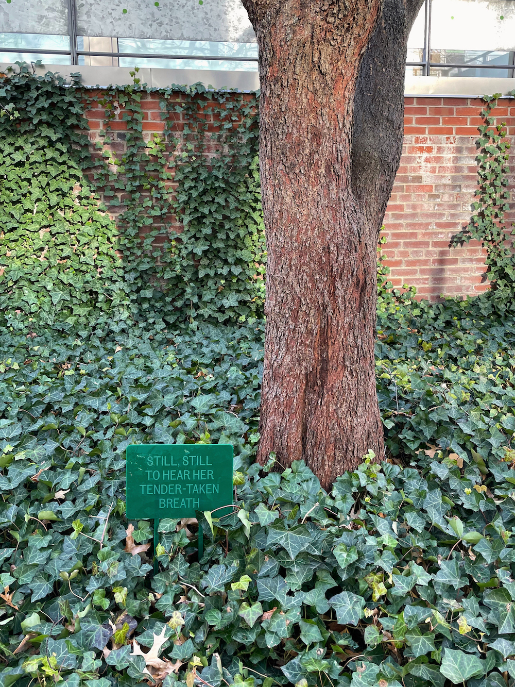

There are so many one-way roads in New Haven.
Looking at the signage, I keep wondering how common yet
powerful it actually is. “One Way,” “Stop,” “Do Not Enter” …The
imperative tone of the signage emphasizes its authority to maintain the
order of the place.
During summer, I encountered a sign
saying “Tiny grass is dreaming.” Inspired by it, I made my poetic
signage proposal. Borrowing the visual language of regular signage, I
chose poems that suit the environment of the existing signage. Keep
silent, yield, do not enter, stop, crossroads ahead: these signage
languages are replaced by the poetic words that correspond to the
meaning.
I put up my poem signage on the backside of the
existing ones on several one-way roads. They cover the blank side of the
signage, forming another way of conveying regulation.